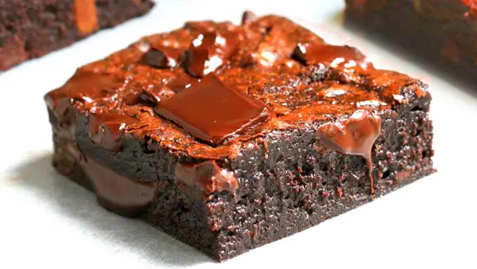

Homemade Brownie Recipe

One of my favorite desserts is brownies. I have tried multiple brownie recipes, ranging from box brownie mixes to making everything from scratch. This is my favorite brownie recipe from Buzzfeed Tasty. This brownie recipe is for people who enjoy fudgier brownies rather than cakey ones.
Ingredients:
- 8 oz good-quality chocolate, semi-sweet
- 12 tablespoons butter, melted
- 1 ¼ cups sugar
- 2 eggs
- 2 teaspoons vanilla extract
- ¾ cup all-purpose flour
- ¼ cup cocoa powder
- 1 teaspoon salt
Instructions:
- Preheat the oven to 350°F (180°C). Line an 8-inch (20 cm) square baking dish with parchment paper.
- Chop the chocolate into chunks. Melt half of the chocolate in the microwave in 20-second intervals, saving the other half for later
- In a large bowl, mix the butter and sugar with an electric hand mixer, then beat in the eggs and vanilla for 1-2 minutes, until the mixture becomes fluffy and light in color.
- Whisk in the melted chocolate (make sure it's not too hot or else the eggs will cook), then sift in the flour, cocoa powder, and salt. Fold to incorporate the dry ingredients, being careful not to overmix as this will cause the brownies to be more cake-like in texture.
- Fold in the chocolate chunks, then transfer the batter to the prepared baking dish.
- Bake for 20-25 minutes, depending on how fudgy you like your brownies, then cool completely.
Enjoy your delicious homemade brownies!